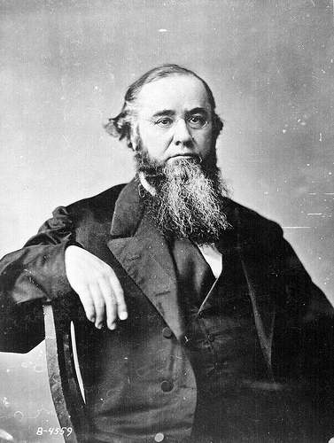

|
Prisons represented a major test of the Civil War soldier's
fortitude, for they were places not only of confinement but
also of suffering and, for thousands of men, death. Just as
neither side at the beginning of the war was prepared for
the size and magnitude that it would quickly attain, so
neither side was ready for the large numbers of prisoners of
war that it would soon have on its hands. At first, this
problem appeared to be a minor one. Most Americans expected
the war to be over quickly, certainly within the first year,
and thus relatively few prisoners would be taken and held
for a relatively short time.
Even as the war moved into its second year with a
progression of engagements on a scale never before
approached on the American continent, the issue of prisoners
of war still did not seem pressing. True, the large battles
yielded large numbers of prisoners. Ulysses S. Grant's
February 1862 capture of Fort Donelson, Tennessee, sent some
13,000 to 15,000 Confederates into captivity, while the
Union surrender of Harpers Ferry, Virginia, in the following
autumn made prisoners of about 10,000 bluecoats. Even these
numbers of prisoners, and those taken in other battles, did
not completely overwhelm the two sides because exchanges and
paroles kept the prisoner population low.
A captured soldier given the privilege of parole was
allowed to give his word of honor, or "parole," that he
would not serve again in his country's military forces until
duly exchanged. He would then be released. Paroled prisoners
were usually granted a month or so of leave by their own
armies and then were required to stay in "parole camps"
until officially exchanged. Thus, after its capture in
Munfordville, Kentucky, in September 1862, the 67th Indiana
Regiment was paroled and subsequently spent several unhappy
months in a parole camp near Indianapolis. The Hoosier
parolees were bored and uncomfortable in their rough
barracks, but they were still better off there than in a
Southern prisoner-of-war camp. After their exchange, the
67th became part of the army with which Grant captured
Vicksburg, Mississippi, the following summer.
This system began to change in 1863. Briefly, the Union
began to enlist black soldiers. The Confederacy, viewing
this move as an atrocity, threatened to enslave captured
U.S. soldiers of African descent and hang their white
officers. The threat of retaliation stopped the Rebels short
of that dire step, but they did refuse to exchange captured
black soldiers. The Union then refused to continue the
exchange of white soldiers if blacks were not included, and
that the Southerners steadfastly refused to do. To compound
the problem, the Confederacy found it expedient to discharge
from parole, without exchange, some 30,000 of its own troops
captured and paroled by Grant at Vicksburg in July 1863.
Those illegal soldiers helped the Confederate cause
considerably during the next few months, particularly in
gaining a Rebel victory at the battle of Mansfield,
Louisiana, in April 1864, ironically defeating Union troops,
including the duly exchanged 67th Indiana, to whom they had
surrendered at Vicksburg nine months before. This action on
the part of the Confederate authorities sounded the death
knell of the parole system, which could work only as long as
each side could trust the other to keep its word of honor.
From a modern perspective, it is amazing that the system
held up as long as it did.
Thus, by the end of 1863, both outlets for the Civil War
prison population--exchange and parole--had been closed.
Meanwhile, the intensity of the fighting continued to grow
and with it the stream of newly captured soldiers. Massive
overcrowding in prisons North and South came to account for
much of the appalling suffering of the prisoners of war. And
yet, crowding alone cannot be blamed for all the suffering.
Men went hungry in the midst of rich agricultural districts;
they lay exposed to blazing sun and driving rain when
abundant wood nearby could have been used to build shelters.
Why? The answers are bound up in cultural and moral issues
that lie at the heart of the war itself--and perhaps in the
nature of any war--and are certain to be controversial.
The Treatment of Prisoners
The relatively few prisoners captured in 1861 imposed no
great strain on either side. Obsolete forts, converted
warehouses, county jails, and other existing buildings
proved sufficient to hold prisoners while they awaited the
informal exchanges that occasionally took place. Field
commanders sometimes paroled captives or worked out local
exchanges on the spot after a skirmish. Not wishing the
burden of feeding prisoners, the Confederacy pressed for a
formal exchange cartel. The Lincoln administration was
reluctant to grant the official recognition that such a
cartel might imply. After the fighting from Fort Donelson to
Seven Days poured thousands of prisoners into inadequate
facilities, however, the administration succumbed to growing
northern pressure for regularized exchanges. Taking care to
negotiate with a belligerent army, not government, the Union
army accepted an exchange cartel on July 22, 1862.
Specifying a rank weighting whereby a non-commissioned
officer was equal to two privates, a lieutenant to four, and
so on up to a commanding general who was worth sixty
privates, this cartel specified a man-for-man exchange of
all prisoners. The excess held by one side or another were
to be released on parole (that is, they promised not to take
up arms until formally exchanged).
For ten months this arrangement worked well enough to
empty the prisons except for captives too sick or wounded to
travel. But two matters brought exchanges to a halt during
1863. First was the northern response to the southern threat
to re-enslave or execute the captured black soldiers and
their officers. When the Confederate Congress in May 1863
authorized this policy, which Jefferson Davis had announced
four months earlier, the Union War Department suspended the
cartel in order to hold southern prisoners as hostages
against fulfillment of the threat. A trickle of informal
exchanges continued, but the big battles in the second half
of 1863 soon filled makeshift prisons with thousands of men.
Grant averted an even greater problem by paroling the 30,000
Vicksburg captives; General Nathaniel R. Banks followed suit
with the 7,000 captured at Port Hudson. But the South's
handling of these parolees provoked a second and clinching
breakdown in exchange negotiations. Alleging technical
irregularities in their paroles, the Confederacy arbitrarily
declared many of them exchanged (without any real exchange
taking place) and returned them to duty. Grant was outraged
when the Union recaptured some of these men at Chattanooga.
Attempts to renew the cartel foundered on the southern
refusal to treat freedmen soldiers as prisoners of war or to
admit culpability in the case of the Vicksburg parolees.
"The enlistment of our slaves is a barbarity," declared the
head of the Confederate Bureau of War. "No people ... could
tolerate ... the use of savages [against them] ... We cannot
on any principle allow that our property can acquire adverse
rights by virtue of a theft of it." By the end of 1863 the
Confederacy expressed a willingness to exchange black
captives whom it considered to have been legally free when
they enlisted. But the South would "die in the last ditch,"
said the Confederate exchange commissioner, before "giving
up the right to send slaves back to slavery as property
recaptured." Very well, responded Union Secretary of War
Stanton. The 26,000 rebel captives in northern prisons could
stay there. For the Union government to accede to
Confederate conditions would be "a shameful dishonor ...
When [the rebels] agree to exchange all alike there will be

The Lincoln administration never adopted a formal
policy of retribution for Southern violence against black soldiers
at Fort Pillow and other engagements. However, many Union soldiers
took matters into their own hands.
|
no difficulty." After becoming general in chief, Grant
confirmed this hard line. "No distinction whatever will be
made in the exchange between white and colored prisoners,"
he ordered on April 17, 1864. And there must be "released to
us a sufficient number of officers and men as were captured
and paroled at Vicksburg and Port Hudson ...
Non-acquiescence by the Confederate authorities in both or
either of these propositions will be regarded as a refusal
on their part to agree to the further exchange of
prisoners." Confederate authorities did not acquiesce.
The South's actual treatment of black prisoners is hard
to ascertain. Even the number of black captives is unknown,
for in refusing to acknowledge them as legitimate prisoners
the Confederates kept few records. Many black captives never
made it to prison camp. in the spirit of Confederate
Secretary of War James A. Seddon's early directive that "we
ought never to be inconvenienced with such prisoners ...
summary execution must therefore be inflicted on those
taken," hundreds were massacred at Fort Pillow, Poison
Spring, the Crater, and elsewhere, An affidavit by a Union
sergeant described what happened after Confederates
recaptured Plymouth on the North Carolina coast in April
1864:
All the negroes found in blue uniform or
with any outward marks of a Union soldier upon him was
killed--I saw some taken into the woods and hung--Others I
saw stripped of all their clothing, and they stood upon the
bank of the river with their faces riverwards and then they
were shot--Still others were killed by having their brains
beaten out by the butt end of the muskets in the hands of
the Rebels.
All were not killed the day of the
capture--Those that were not, were placed in a room with
their officers, they (the Officers) having previously been
dragged through the town with ropes around their necks,
where they were kept confined until the following morning
when the remainder of the black soldiers were killed.
Black prisoners who survived the initial rage of their
captors sometimes found themselves returned as slaves to
their old masters or, occasionally, sold to a new one. While
awaiting this fate they were often placed at hard labor on
Confederate fortifications. The Mobile Advertiser and
Register of October 15, 1864, published a list of 575
black prisoners in that city working as laborers until
owners claimed them.
What to do about the murder or enslavement of black
captives presented the Union government with a dilemma. At
first Lincoln threatened an eye-for-an-eye retaliation. "For
every soldier of the United States killed in violation of
the laws of war," he ordered on July 30, 1863, "a rebel
soldier shall be executed; and for every one enslaved by the
enemy or sold into slavery, a rebel soldier shall be placed
at hard labor on the public works." But this was easier said
than done; as Lincoln himself put it, "the difficulty is not
in stating the principle, but in practically applying it."
After the Fort Pillow massacre the cabinet spent two
meetings trying to determine a response. To execute an equal
number of rebel prisoners would punish the innocent for the
crimes of the guilty. The government must not undertake such
a "barbarous ... inhuman policy," declared Secretary of the
Navy Gideon Welles. Lincoln agreed that "blood can not
restore blood, and government should not act for revenge."
The cabinet decided to retaliate against actual offenders
from Nathan Bedford Forrest's command, if any were captured,
and to warn Richmond that a certain number of southern
officers in northern prisons would be set apart as hostages
against such occurrences in the future,
But no record exists that either recommendation was
carried out. As Lincoln sadly told black abolitionist
Frederick Douglass, "if once begun, there was no telling
where [retaliation] would end." Execution of innocent
southern prisoners--or even guilty ones--would produce
Confederate retaliation against northern prisoners in a
never-ending vicious cycle. In the final analysis, concluded
the Union exchange commissioner, these cases "can only be
effectually reached by a successful prosecution of the war."
After all, "the rebellion exists on a question connected
with the right or power of the South to hold the colored
race in slavery; and the South will only yield this right
under military compulsion." Thus "the loyal people of the
United States [must] prosecute this war with all the energy
that God has given them."
Union field commanders in South Carolina and Virginia
carried out the only official retaliation for southern
treatment of black prisoners. When Confederates at
Charleston and near Richmond put captured black soldiers to
work on fortifications under enemy fire in 1864, northern
generals promptly placed an equal number of rebel prisoners
at work on Union facilities under fire. This ended the
Confederate practice.
Although Union threats of retaliation did little to help
ex-slaves captured by Confederates, they appear to have
forced southern officials to make a distinction between
former slaves and free blacks. "The serious consequences,"
wrote Secretary of War Seddon to South Carolina's governor,
"which might ensue from a rigid enforcement of the act of
Congress" (which required all captured blacks to be turned
over to states for punishment as insurrectionists) compel us
"to make a distinction between negroes so taken who can be
recognized or identified as slaves and those who were free
inhabitants of the Federal States." The South generally
treated the latter--along with white officers of black
regiments--as prisoners of war. This did not necessarily
mean equal treatment. Prison guards singled out black
captives for latrine and burial details or other onerous
labor. At Libby Prison in Richmond ten white officers and
four enlisted men of a black regiment were confined to a
small cell next to the kitchen where they subsisted on bread
and water and almost suffocated from cooking smoke. "An open
rub," wrote another prisoner, "was placed in the room for
the reception of their excrement, where it was permitted to
remain for days before removal." In South Carolina captured
black soldiers from the 54th Massachusetts and other
northern units were kept in the Charleston jail rather than
in a POW camp.
These soldiers from the 54th probably fared as well in
jail--if not better--as their white fellows in war prisons.
The principal issue that aroused northern emotions was not
the treatment of black prisoners but of all Union prisoners.
As the heavy fighting of 1864 piled up captives in
jerry-built prisons, grim stories of disease, starvation,
and brutality began to filter northward. The camp at
Andersonville in southwest Georgia became representative in
northern eyes of southern barbarity. Andersonville prison
was built in early 1864 to accommodate captives previously
held at Belle Isle on the James River near Richmond, because

Stories of the horrors at Andersonville--and pictures of the prison's
survivors, like this one--infuriated the Northern public. Though Andersonville certainly
deserved its poor reputation, most other Civil War prison camps were nearly as bad, both in
the North and the South.
|
the proximity of Union forces threatened liberation of these
prisoners and the overworked transport system of Virginia
could barely feed southern citizens and soldiers, let alone
Yankees. A stockade camp of sixteen acres designed for
10,000 prisoners, AndersonviIle soon became overcrowded with
captives from General William Tecumseh Sherman's army as
well as from the eastern theater. It was enlarged to
twenty-six acres, in which 33,000 men were packed by August
1864--an average of thirty-four square feet per man--without
shade in a Deep South summer and with no shelter except what
they could rig from sticks, tent flies, blankets, and odd
bits of cloth. (By way of comparison, the Union prison camp
at Elmira, New York, generally considered the worst northern
prison, provided barracks for the maximum of 9,600 captives
living inside a forty-acre enclosure--an average of 180
square feet per man.) During some weeks in the summer of
1864 more than a hundred prisoners died every day in
Andersonville. Altogether 13,000 of the 45,000 men
imprisoned there died of disease, exposure, or malnutrition.
Andersonville was the most extreme example of what many
northerners regarded as a fiendish plot to murder Yankee
prisoners. After the war a Union military commission tried
and executed its commandant, Henry Wirz, for war crimes--the
only such trial to result from the Civil War. Whether Wirz
was actually guilty of anything worse than bad temper and
inefficiency remains controversial today.
During 1864 a crescendo rose in the northern press
demanding retribution against rebel prisoners to coerce
better treatment of Union captives. "Retaliation is a
terrible thing," conceded the New York Times, "but
the miseries and pains and the slowly wasting life of our
brethren and friends in those horrible prisons is a worse
thing. No people or government ought to allow its soldiers
to be treated for one day as our men have been treated for
the last three years." When a special exchange of sick
prisoners in April returned to the North several living
skeletons, woodcut copies of their photographs appeared in
illustrated papers and produced a tidal wave of rage. What
else could one expect of slaveholders "born to tyranny and
reared to cruelty?" asked the normally moderate
Times. The Committee on the Conduct of the War and
the U.S. Sanitary Commission each published an account of
Confederate prison conditions based on intelligence reports
and on interviews with exchanged or escaped prisoners. "The
enormity of the crime committed by the rebels," commented
Secretary of War Stanton, "cannot but fill with horror the
civilized world ... There appears to have been a deliberate
system of savage and barbarous treatment." An editorial in
an Atlanta newspaper during August made its way across the
lines and was picked up by the northern press: "During one
of the intensely hot days of last week more than 300 sick
and wounded Yankees died at Andersonville. We thank heaven
for such blessings." This was the sort of thing that
convinced otherwise sensible northerners that "Jefferson
Davis's policy is to starve and freeze and kill off by
inches all the prisoners he dares not butcher outright ...
We cannot retaliate, it is said; but why can we not?"
The Union War Department did institute a limited
retaliation. In May 1864, Stanton reduced prisoner rations
to the same level that the Confederate army issued to its
own soldiers. In theory this placed rebel prisoners on the
same footing as Yankee prisoners in the South, who in theory
received the same rations as Confederate soldiers. But in
practice few southern soldiers ever got the official rations
by 1864--and Union prisoners inevitably got even less--so
most rebel captives in the North still probably ate better
than they had in their own army. Nevertheless, the reduction
of prisoner rations was indicative of a hardening northern
attitude. Combined with the huge increase in the number of
prisoners during 1864, this produced a deterioration of
conditions in northern prisons until the suffering,
sickness, and death in some of them rivaled that in southern
prisons--except Andersonville, which was in a class by
itself.
This state of affairs produced enormous pressures for a
renewal of exchanges. Many inmates at Andersonville and
other southern prisons signed petitions to Lincoln asking
for renewal, and the Confederates allowed delegations of
prisoners to bear these petitions to Washington. Nothing
came of them.
Lincoln could indeed have renewed the exchange if he had
been willing to forget about ex-slave soldiers. But he no
more wanted to concede this principle than to renounce
emancipation as a condition of peace. On August 27, Benjamin
Butler, who had been appointed a special exchange agent,
made the administration's position clear in a long letter to
the Confederate exchange commissioner--a letter that was
published widely in the newspapers. The United States
government would renew exchanges, said Butler, whenever the
Confederacy was ready to exchange all classes of prisoners.
"The wrongs, indignities, and privations suffered by our
soldiers," wrote Butler, who was a master of rhetoric,
"would move me to consent to anything to procure their
exchange, except to barter away the honor and faith of the
Government of the United States, which has been so solemnly
pledged to the colored soldiers in its ranks. Consistently
with national faith and justice we cannot relinquish that
position."
General Grant had privately enunciated another argument
against exchange: it would strengthen enemy armies more than
Union armies. "It is hard on our men held in Southern
prisons not to exchange them," Grant said in August 1864,
"but it is humanity to those left in our ranks to fight our
battles." Most exchanged rebels--"hale, hearty, and
well-fed" as northerners believed them to be--would "become
active soldier[s] against us at once" while "the
half-starved, sick, emaciated" Union prisoners could never
fight again. "We have got to fight until the military power
of the South is exhausted, and if we release or exchange
prisoners captured it simply becomes a war of
extermination."
A good many historians--especially those of southern
birth--have pointed to Grant's remarks as the real reason
for the North's refusal to exchange. Concern for the rights
of black soldiers, in this view, was just for show. The
northern strategy of a war of attrition, therefore, was
responsible for the horrors of Andersonville and the
suffering of prisoners on both sides. This position is
untenable. Grant expressed his opinion more than a year
after the exchange cartel had broken down over the black
prisoner question. And an opinion was precisely what it was;
Grant did not order exchanges prohibited for purposes of
attrition, and the evidence indicates that if the
Confederates had conceded on the issue of ex-slaves the
exchanges would have resumed. In October 1864, General Lee
proposed an informal exchange of prisoners captured in
recent fighting on the Richmond-Petersburg front. Grant
agreed, on condition that blacks be exchanged "the same as
white soldiers." If this had been done, it might have
provided a precedent to break the impasse that had by then
penned up more than a hundred thousand men in POW camps. But
Lee replied that "negroes belonging to our citizens are not
considered subjects of exchange and were not included in my
proposition." Grant thereupon closed the correspondence with
the words that because his "Government is bound to secure to
all persons received into her armies the rights due to
soldiers," Lee's refusal to grant such rights to former
slaves "induces me to decline making the exchanges you ask."
In January 1865 the rebels finally gave in and offered to
exchange "all" prisoners. Hoping soon to begin recruiting
black soldiers for their own armies, Davis and Lee suddenly
found the Yankee policy less barbaric. The cartel began
functioning again and several thousand captives a week were
exchanged over the next three months, until Appomattox
liberated everyone.
Few if any historians would now contend that the
Confederacy deliberately mistreated prisoners. Rather, they
would concur with contemporary opinions--held by some
northerners as well as southerners--that a deficiency of
resources and the deterioration of the Southern economy were
mainly responsible for the sufferings of Union prisoners.
The South could not feed its own soldiers and civilians; how
could it feed enemy prisoners? The Confederacy could not
supply its own troops with enough tents; how could it
provide tents for captives? A certain makeshift quality in
southern prison administration, a lack of planning and
efficiency, also contributed to the plight of prisoners.
Because Confederates kept expecting exchanges to be resumed,
they made no long-range plans. The matter of shelter at
Andersonville affords an example of shortages and lack of
foresight. Although the South had plenty of cotton, it did
not have the industrial capacity to turn enough of that
cotton into tent canvas. The South had plenty of wood to
build barracks, but there was a shortage of nails at
Andersonville and no one thought to order them far enough in
advance.
So the prisoners broiled in the sun and shivered in the
rain. Union captives at other enlisted men's prison camps
endured a similar lack of shelter in contrast to northern
prisoners, all of which provided barracks except Point
Lookout in Maryland, where prisoners lived in tents. During
the war numerous Southerners criticized their own prisons
... A young Georgia woman [wrote] after a visit to
Andersonville, "I am afraid God will suffer some terrible
retribution to fall upon us for letting such things happen.
If the Yankees ever should come to South-West Georgia ...
and see the graves there, God have mercy on the land!"
"And yet, what can we do?" she asked herself. "The
Yankees themselves are really more to blame than we, for
they won't exchange these prisoners, and our poor,
hard-pressed Confederacy has not the means to provide for
them, when our own soldiers are starving in the field." This
defensive tone became dominant in southern rhetoric after
the war.
The North's "War Psychosis"
Apparently an inevitable concomitant of armed warfare is
the hatred engendered in the minds of the contestants by the
conflict. The spirit of patriotism which inspires men to
answer the call of their country in its hour of need breeds
within those men the fiercest antagonism toward that
country's enemies. Such enmity finds its natural expression
not only on the battlefield in the heat of conflict but also
in the lives of the soldiers and the sentiment of the
community from which they come, both of which have been
thrown out of their accustomed peace-time routine by the
outbreak of the war. The attachment to an ideal, a cause, or
a country, when such attachment calls for the sacrifice of
security and life, blinds the person feeling that attachment
to whatever of virtue there may be in the opposing ideal,
cause, or country. Seemingly, it becomes necessary for the
supporters of one cause to identify their entire personality
with that cause, to identify their opponents with the
opposing cause, and to hate the supporters of the enemy
cause with a venom which counterbalances their devotion to
their own.
To a people actuated by such a devotion to a cause, it is
inevitable that their opponents appear to be defective in
all principles which are held dear by that people. The enemy
becomes a thing to be hated; he does not share the common
virtues, and his peculiarities of speech, race, or culture
become significant as points of difference or, better, sins
of the greater magnitude. The critical faculties, present to
some degree in times of peace, atrophy on the approach of
national catastrophe.
With such a state of mind corning as the natural result
of the upheaval of the social order which the war produced,
it was not difficult for credence to be gained for stories
of atrocities committed by one or the other side in the
Civil War, Immediately after the battle of Bull Run
newspaper correspondents, on or near the field, sent
accounts of the battle to their home papers. Throughout the
loyal portion of the United States the defeat of the Union
armies produced a depression which was fed by the stories of
barbarities accompanying the correspondents' accounts. "Most
shocking barbarities begin to be reported as practiced by
the rebels upon the wounded and prisoners of the Union that
fall into their hands, We are told of their slashing the
throats of some from ear to ear; of their cutting off the
heads of others and kicking them about as footballs; and of
their setting up the wounded against trees and firing at
them as targets or torturing them with plunges of bayonets
into their bodies," commented the editor of an
administration journal--as he characterized the Confederates
as "brutal robbers," "fighting as outlaws of civilization."
An illustrated weekly carried a full-page picture of rebels
plunging their bayonets into the bodies of wounded soldiers.
"The Southern character," remarked the first paper, "is
infinitely boastful, vainglorious, full of dash, without
endurance, treacherous, cunning, timid, and revengeful."
So far as prisons and prisoners of war were concerned,
the attention of Northern newspapers, the fomenters and
agents for the dissemination of this psychosis, was first
directed toward obtaining an exchange for prisoners held in
the Confederate prisons. The position of the government,
that exchange would be tantamount to recognition, was
characterized as absurd by the newspapers, whether they in
general supported or opposed the administration. However,
the tendency of some papers to support the administration by
saying, "In a war of this kind words are things. If we must
address [Jefferson] Davis as president of the Confederacy,
|

Secretary of War Edwin M. Stanton
|
we cannot exchange and the prisoners should not wish it,"
led the papers advocating exchange to advance a humanitarian
argument. The sufferings of the prisoners in the South were
emphasized, and how prisoners were confined in close rooms,
"whose poisoned atmosphere is slowly sapping their strength
hour by hour," was often related. The more sensational press
gathered stories of bad food, cruel treatment, and utter
destitution and predicted in the first months of the war
that the Richmond tobacco warehouses would "rank with the
British prison ships and the dungeons of the Revolution."
Secretary of War Edwin M. Stanton, unwilling to give up
the position of the administration in regard to exchanges
and unable to resist the tide of opposition to the
established policy, as his first official act as head of the
war department, determined to send Bishop Edward Raymond
Ames and Hamilton Fish to Richmond to relieve the prisoners'
sufferings. This action had for the moment the desired
effect of quieting opposition to the administration, but
since there was some doubt that supplies which Ames and Fish
might send would be delivered to the prisoners, the opinion
was expressed "that the best way to supply the wants of our
captive soldiers is to bring them home, even at the cost of
releasing as many rebels." With this attitude of mind
prevailing, the failure of the commissioners to get
admission to Richmond was hailed as an "unexpected and most
splendid success," and exchange was promised immediately.
As this mission did not consummate the promised exchange,
the organs of public opinion returned to their policy of
exciting sympathy for the prisoners. Although it was
declared that the treatment of prisoners in the South was
not due to vindictive spirit on the part of the Confederate
authorities, it was stated that they were unable to control
the passions of the "drunken and ignorant hordes" of their
army, and it was admitted that they did not possess the
means to maintain a war prison. Under such conditions
exaggerated accounts of outrages on unarmed prisoners by the
brutal keepers were legion.
In July an escaped quartermaster of an Iowa regiment
reported to the governor of his state an account of his
experiences in Montgomery and Selma, Alabama, and Macon,
Georgia, which revealed that not everyone was willing to
clear the rebels of vindictive feeling. He said that the two
hundred and fifty officers who shared his confinement
received less than one-fourth the rations of a private in
the United States army "and are subjected to all the
hardships and indignities which venomous traitors can heap
upon them." The prisoners were confined "in a foul and
vermin abounding cotton shed." At Tuscaloosa they were
forbidden to leave the crowded room to go to the sinks at a
time when diarrhea was prevalent; at Montgomery the
prisoners were destitute of clothing; and at both places the
hospitals were denied medicines. Cornbread issued to the
prisoners was made of unsifted meal and the meat at
Montgomery was spoiled. Men were killed for looking out the
window, "prohibiting them the poor privilege of looking at
their mother earth."
In the East, public opinion of rebel vindictiveness
underwent a modification with the beginning of exchanges
under the cartel. "It would not be fair to blame the rebels'
vindictive spirit entirely," declared a newspaper
correspondent, "but partly from that and partly from a lack
of food and medicines," the prisoners were suffering. A
surgeon told a newspaper correspondent that in the wounds of
many of the men "there were enough maggots to fill a wine
glass."
As the vindictive spirit of the Confederates came to be
more emphasized, the corollary proposition was developed
that prisoners in the Northern prisons were accorded
excellent treatment. "How different an example of humanity
the North is setting," remarked this correspondent; and his
paper, demanding exchange, declared that the rebel prisoners
were growing stout. They were fed on capital food, given
medicines, and fanned with cool breezes in the summer. Its
readers were called upon to "think of the crowded and filthy
tobacco warehouses, the brutal keepers, the sanguinary
guards, the rotten food, the untended wounds, the
unmedicined diseases, the miserable marches through the
blazing South!" "What horrors has death on the battlefield
to this?" Under such pressure as this, the cartel was
negotiated and prisoners began to be exchanged.
Clinching evidence of the vindictiveness of the rebels
came as a result of Davis' proclamation against General John
Pope and his officers. "The rebels won't let the United
States think good of them," it was declared. "For a full
year they have maintained a systematic bedevilment of Union
prisoners and now," although Pope had made no arrests, the
rebels, "gloating in cruelty, make haste to oppress." During
the period that exchanges were carried on under the cartel
the attitude of mind already created by the stories from the
Southern prisoners was not allowed to die. Instead, by a
process of accretion, there developed a firm belief in the
mind of the Northern people that the Confederacy
deliberately sought to torture the prisoners who fell into
its hands. This development took place despite the fact that
both Colonel Michael Corcoran and Congressman Albert Ely
published accounts of their prison experiences which
contradicted the prevailing beliefs.
Ely's account, published in the spring of 1862 before the
formation of the cartel, related his experiences without any
manifestation of the cruelty of Southern keepers. He
revealed an opposition to the administration's policy of not
exchanging prisoners, and, although recounting several
murders of prisoners at the windows, insisted that such acts
of brutality could not have been known to General John Henry
Winder, who was responsible for overseeing all Confederate
prisons, or the Confederate secretary of war. Ely borrowed
money from the prison commissary, received gifts from
sympathetic friends, and admired General Winder. The only
moral which he pointed out in his book, The Journal of
Alfred Ely, was that his insight into Southern character
was not worth the "sufferings, privations, indignities and
discomforts" which he underwent as a result of the
unfortunate curiosity which led him to be a spectator at the
battle of Bull Run, where he was captured.
Colonel Corcoran, returning with the first of the
prisoners to be exchanged under the cartel, also published
an account of his experiences. More critical than the work
of his fellow prisoner, The Captivity of General
Corcoran declared the rebel secretary of war to be "one
of those disgraces to mankind with which the world is
anything but blessed," but he had no harsh words for General
Winder. Although "the Hero of Bull Run," as Corcoran
described himself in his book, had suffered indignities
unbecoming a hero, his account as a whole did not serve to
confirm the stories which were current at the time.
More in accordance with the prevailing sentiment was a
book from the pen of a Methodist Protestant minister of
abolitionist leanings; James J. Geer, of Cincinnati. In
Beyond the Lines; or, a Yankee Loose in Dixie, he
related his experiences in Montgomery, Alabama, and Macon,
Georgia. He escaped from the latter prison, was recaptured,
and finally exchanged. Through these experiences he
developed a decided antipathy toward the aristocracy and the
"clay eating" classes of the South. Negroes who helped him
in his escape and shared his confinement in various jails
were revealed as oppressed and kept in ignorance by their
white masters. The tone of the book was bitter and stories
of rebel barbarities filled its pages.
The influence of such accounts was widespread and tended
to make each prisoner feel that he was being oppressed.
Source: Steven C. Woodworth, ed., The Loyal, True, and Brave
(Wilmington, DE: Scholarly Resources, Inc., 2002), 101-108.
|